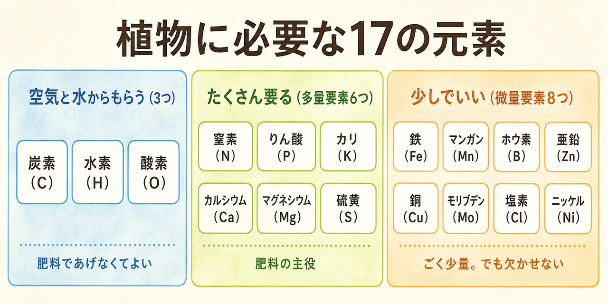
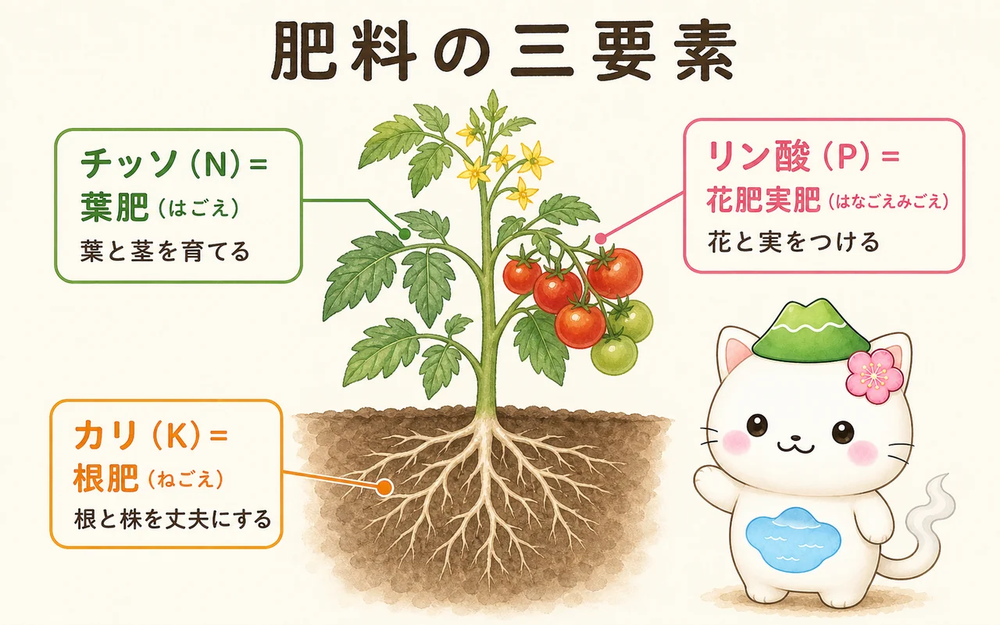
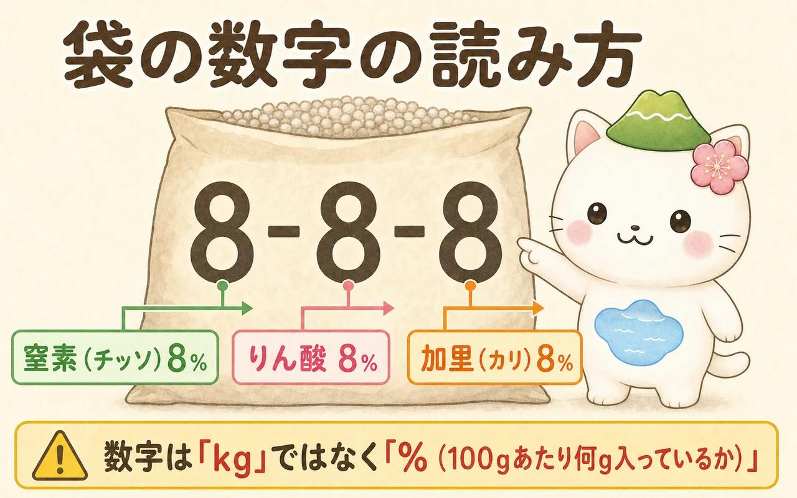
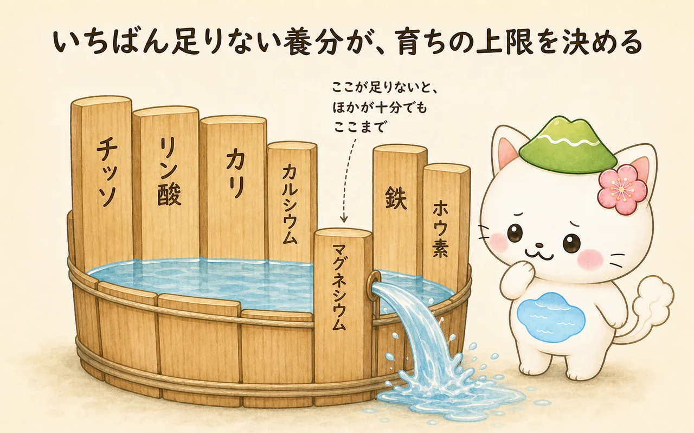
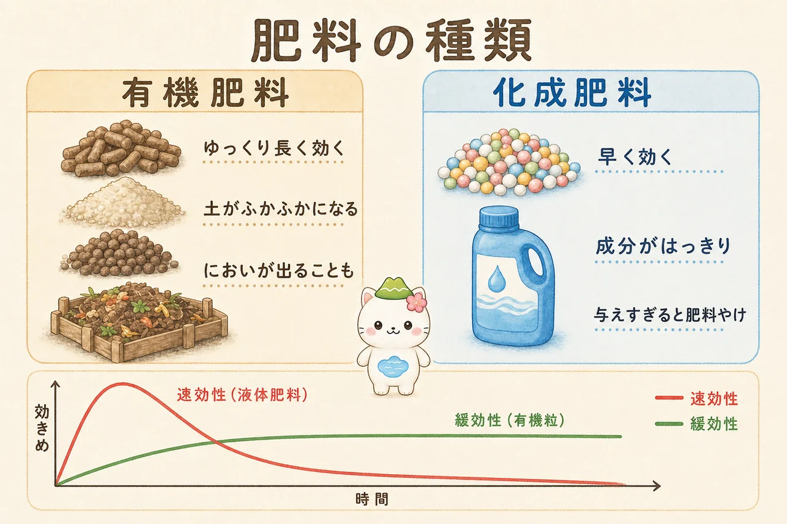
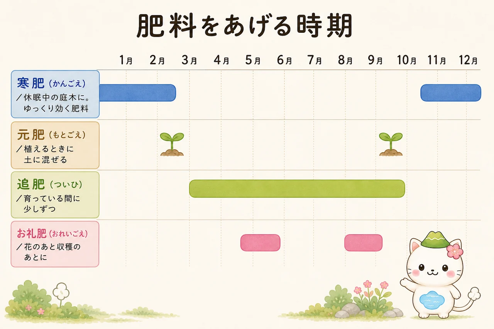

肥料って、そもそも何をするもの？
植物の体をつくっている材料の9割以上は、じつは肥料からきていません。葉が光を受けて行う光合成で、空気中の二酸化炭素と、根から吸った水から炭水化物をつくり、それが幹や葉や実になります。ここで使われる炭素・水素・酸素は、空気と水からいくらでも手に入るので、肥料であげる必要がありません。
では肥料は何をしているのか。光合成では絶対につくれないものを土から補うのが肥料の役目です。葉を緑にする葉緑素、体をつくるタンパク質、細胞をつなぐ壁——これらには、チッソやマグネシウム、カルシウムといったミネラル（無機養分）がどうしても必要で、それは土の中にしかありません。

植物が生きるのに欠かせない元素は17種類あり、必須元素と呼ばれます。多く必要な多量要素（チッソ・リン酸・カリ・カルシウム・マグネシウム・硫黄）と、ごく少しでいい微量要素（鉄・マンガン・ホウ素など8種類）に分かれます。肥料選びとは、要するに「このうちどれを、どれだけ足すか」を決める作業です。
肥料と、堆肥・腐葉土のちがい
園芸店で並んで売られているので混同しがちですが、この2つは目的がまったく違います。
- 肥料＝栄養をあげるもの。化成肥料、油かす、液体肥料など。効かせたい成分がはっきりしている。
- 堆肥・腐葉土＝土そのものをよくするもの（土壌改良材）。ふかふかにして水はけ・水もち・空気の通りをよくし、微生物を増やす。栄養は少なめ。
どんなにいい肥料をあげても、土がカチカチで根が伸びられなければ効きません。まず堆肥や腐葉土で土を整え、その上で肥料で栄養を足す——この順番が基本です。

肥料はごはんじゃなくてサプリメントだと思ってね。ごはん（＝光合成でつくる糖）は植物が自分で用意できるの。足りないビタミンだけを、ちょっと足してあげるのが肥料。「元気がないからたっぷりあげよう」は、体調が悪い人にサプリを大量に飲ませるのと同じで、かえって具合が悪くなっちゃうよ。
三要素：チッソ・リン酸・カリ
必要な量が特に多く、土から失われやすいのがチッソ（N）・リン酸（P）・カリ（K）の3つ。これを肥料の三要素と呼び、ほとんどの肥料はこの3つの配合で性格が決まります。それぞれ体のどこを担当しているかで覚えるのがいちばん確実です。

チッソ（N）＝ 葉肥（はごえ）
葉と茎を大きくする担当。葉を緑にする葉緑素（クロロフィル）の材料であり、体をつくるタンパク質の材料でもあります。植物の成長にいちばん直接ひびく成分で、効きめもわかりやすく出ます。
- 足りないと：全体に生育が鈍い。古い葉（下の葉）からうすい黄緑〜黄色になる。
- 多すぎると：葉ばかり茂って花や実がつかない（つるぼけ）。細く軟弱に伸びて（徒長）、アブラムシがつきやすく、病気にも寒さにも弱くなる。
葉物野菜や観葉植物ではありがたい成分ですが、実や花を楽しむ植物では入れすぎがいちばんの失敗になります。
リン酸（P）＝ 花肥・実肥（はなごえ・みごえ）
花を咲かせ、実をならせる担当。細胞分裂やエネルギーの受け渡し（ATP）に関わり、遺伝情報を運ぶDNAの材料でもあります。根の張り出しにも効くので、植え付けのときの元肥として重視されます。
- 足りないと：花つき・実つきが悪い。葉が濃い緑〜赤紫っぽくなり、育ちが止まったようになる。
- クセ：土の中で動きにくく、鉄やアルミと結びついて効かなくなりやすい。表面にまくより、根の届く深さに混ぜ込むほうが効きます。
カリ（K）＝ 根肥（ねごえ）
根を育て、株を丈夫にする担当。体の材料になるというより、細胞の中の水分量を調節し、光合成でつくった糖を運び、気孔の開け閉めを制御するという「管理役」です。カリが足りている株は、暑さ・寒さ・乾燥・病気に強くなります。
- 足りないと：古い葉のふちが黄色く枯れ込む。根の張りが悪く、倒れやすく、病気にかかりやすい。
- 特に必要：ダイコン・ニンジン・イモ類などの根菜、球根植物。
覚え方はかんたん。上から順に「葉・花実・根」＝「チッソ・リン酸・カリ」。袋の数字も必ずこの順番に並んでるから、「上から下」で覚えておけば、店先で袋を裏返さなくても性格がわかるようになるよ。
袋の数字「8-8-8」の読み方
肥料の袋に大きく書いてある3つの数字。これはチッソ・リン酸・カリが何％入っているかを表しています（保証成分量）。順番は法律で決まっていて、必ず左からチッソ・リン酸・カリです。

- 8-8-8（オール8）：3つが同量のバランス型。迷ったらこれ。庭木にも野菜にも広く使える。
- 数字が大きい（14-14-14 など）：濃いということ。同じ効果なら使う量は半分ほどで済むが、まきすぎたときの被害も大きい。
- 真ん中が大きい（6-10-5 など）：リン酸が多い花・実向け。開花期の草花や果樹に。
- 左が大きい（10-5-5 など）：チッソが多い葉物・生育初期向け。
残りの割合は何かというと、成分を運ぶための増量材や、カルシウム・マグネシウムなどの副成分です。数字を全部足しても100にならないのが普通なので、心配いりません。
ちょっと細かい話だけど、リン酸とカリの数字は「りん酸（P₂O₅）」「加里（K₂O）」という酸素とくっついた形の重さで書く決まりになってるの。だから厳密には元素そのものの量とは少しちがうんだけど、袋どうしを見くらべるぶんには全部同じルールだから、そのまま比べて大丈夫だよ。
三要素のほかの栄養素
三要素ばかり気にされますが、ほかの14種類も1つでも欠けると植物は正常に育ちません。ふだんは土や堆肥から自然に供給されているので意識しませんが、鉢植えや同じ場所で何年も育てていると足りなくなることがあります。
中量要素：カルシウム・マグネシウム・硫黄
三要素の次に必要量が多い3つです。この3つは、症状が出るとかなり目立ちます。
- カルシウム（Ca）：細胞壁をつなぎ、組織を丈夫にする。不足するとトマトの尻腐れ果、ハクサイの芯腐れなど、成長点や実の先端が壊れる。石灰資材（苦土石灰など）で補い、同時に土の酸性もやわらげる。
- マグネシウム（Mg）：葉緑素の中心にある原子。これがないと葉は緑になれない。不足すると古い葉の葉脈のあいだだけが黄色くなる（葉脈は緑のまま残るのが特徴）。「苦土（くど）」という名前で肥料に入っている。
- 硫黄（S）：タンパク質やアミノ酸の材料。ネギ・タマネギ・アブラナ科の香り成分のもとでもある。硫安や過リン酸石灰など多くの肥料に含まれるため、家庭園芸で不足することはまれ。
微量要素：ごく少量、でも欠かせない8つ
必要量はごくわずかですが、体の中で「触媒」や「スイッチ」として働くため、なくなると一気に不調が出ます。
| 要素 | おもな働き | 足りないときのサイン |
|---|---|---|
| 鉄（Fe） | 葉緑素をつくるのを助ける。体内の酸化還元。 | 新しい葉が葉脈を残して黄〜白っぽくなる。アルカリ性の土で起きやすい。 |
| マンガン（Mn） | 光合成で水を分解する反応の中心。 | 新しい葉の葉脈間が黄化。鉄欠乏と似る。 |
| ホウ素（B） | 細胞壁づくり、糖の移動、根や新芽の伸長、受粉。 | 成長点が枯れる、芯腐れ、実の空洞や変形。 |
| 亜鉛（Zn） | 植物ホルモン（オーキシン）の生成。酵素の材料。 | 葉が小さくなる、節がつまって縮こまる。 |
| 銅（Cu） | 葉緑素の形成、光合成と呼吸の酵素。 | 新しい葉の黄白化、先端の枯れ。 |
| モリブデン（Mo） | 吸ったチッソを使える形に変える。マメ科の根粒菌を助ける。 | チッソ肥料をやっても効かない、葉の黄化。必要量は17元素中で最少。 |
| 塩素（Cl） | 光合成の水分解、細胞内の浸透圧調整。 | 葉先の枯れ、しおれ。水道水や雨で足りるため不足はまれ。 |
| ニッケル（Ni） | 尿素を分解する酵素（ウレアーゼ）の材料。 | 葉先の黄化・枯れ込み。ごくまれ。 |
市販の培養土や、堆肥・腐葉土を入れている庭ではまず不足しません。気になるときは、微量要素入りの肥料や液体肥料を1本使えば十分です。個別に買いそろえる必要はありません。
足りないサインの見つけ方
ここで大事な考え方が「最小律」です。植物の育ちは、いちばん足りていない養分ひとつによって頭打ちになります。チッソを2倍にしても、マグネシウムが足りなければ、そこで止まる。板の高さがバラバラの桶に水を入れると、いちばん低い板の高さまでしか水が溜まらないのと同じです。

では、何が足りないかをどう見分けるか。じつは「症状が古い葉に出るか、新しい葉に出るか」で、かなり絞り込めます。理由は、植物の体の中を移動できる養分と、できない養分があるから。移動できる養分が不足すると、植物は古い葉から回収して新しい葉に送るので、古い葉が犠牲になるのです。
- 該当：チッソ・リン酸・カリ・マグネシウム
- 下葉全体が黄色い → チッソ不足
- 下葉のふちが枯れ込む → カリ不足
- 下葉の葉脈だけ緑で、間が黄色 → マグネシウム不足
- 葉が濃い緑〜赤紫、育ちが止まる → リン酸不足
- 該当：カルシウム・ホウ素・鉄など
- 新葉が葉脈を残して黄〜白 → 鉄不足（土がアルカリ寄りかも）
- 成長点が枯れる・実の先が黒くへこむ → カルシウム不足
- 芯が腐る・実が変形する → ホウ素不足
葉が黄色い＝肥料不足、とは限らないよ。水のやりすぎで根が傷んでいる日照が足りない病気や害虫でも、まったく同じ見た目になるの。とくに根がやられていると、土に肥料があっても吸えないから、そこに追肥するといちばん悪い方向にいっちゃう。まず根と葉裏を見てからにしようね。害虫や病気のほうが疑わしいときは 植物の病害虫の種類と対策 を見てみて。
肥料の種類と選び方
売り場にはたくさんの肥料が並びますが、分け方は「原料」と「効きめの速さ」の2軸だけです。ここを押さえれば選べます。

原料で分ける：有機肥料と化成肥料
- 油かす、骨粉、魚かす、鶏ふん、草木灰など、動植物が原料。
- 土の微生物に分解されてから効くため、効きはじめが遅く、長く続く。
- 微生物が増え、土がふかふかになるという副産物が大きい。
- 濃度が低く肥料やけしにくい。
- 弱点：におい・虫がわくことがある。効き方が読みにくい。未熟なものは根を傷める。
- 鉱物や工業的に合成した原料を化学的に加工したもの。
- 成分量がはっきりしていて、効き方が計算できる。
- 清潔でにおいがなく、少量で済むので扱いやすい。
- 弱点：土そのものはよくならない。濃いのでまきすぎると肥料やけ。
- 使いすぎると土がかたくなり、微生物が減ることも。
どちらが正解ということはなく、「元肥は有機で土台をつくり、生育中の追肥は化成でピンポイントに補う」という組み合わせがいちばん失敗が少ない使い方です。
効きめの速さで分ける
- 速効性（液体肥料、水にすぐ溶ける化成）：数日で効き、2週間ほどで切れる。弱った株の回復、開花中や収穫中の補給に。頻繁に必要。
- 緩効性（樹脂でコーティングした粒、IB化成など）：少しずつ溶け出し、1〜3か月ほど安定して効く。元肥や置き肥の主役。
- 遅効性（骨粉、油かすなどの有機質）：微生物の分解を待つため効き始めに1か月以上かかる。冬にまいて春に効かせる寒肥に最適。
鉢植えなら、土に置く緩効性の粒を基本にして、元気がないときだけ液体肥料を足す。庭木なら、冬に有機質の遅効性肥料を埋めるだけで1年もつことがほとんどです。
あげる時期と、あげる場所
肥料は名前で呼び分けられていますが、これは種類の違いではなく「いつ・何のために」あげるかの違いです。

- 元肥（もとごえ）：植え付けのときにあらかじめ土に混ぜておく肥料。緩効性・有機質を使う。スタートの土台。
- 寒肥（かんごえ）：庭木・果樹に、休眠中の12〜2月に施す元肥の一種。遅効性の有機質を埋めておくと、分解が進んだころにちょうど春の芽出しに間に合う。庭木の施肥はこれ1回でほぼ足りる。
- 追肥（ついひ）：育っている最中に、足りなくなった分を少しずつ補うもの。速効性〜緩効性。野菜や草花では2〜4週間おきが目安。
- お礼肥（おれいごえ）：花が終わったあと・実を収穫したあとに、疲れた株を回復させる肥料。速効性を少量。翌年の花芽づくりのために大事。
- 置き肥（おきごえ）：鉢の土の上に固形の緩効性肥料を置く方法。水やりのたびに少しずつ溶ける。株元から離して置く。
「どこに」まくかで効きが変わる
意外と知られていないのがまく場所です。根が水や養分を吸っているのは、太い根の途中ではなく、いちばん先端の細い根（細根）。そして細根は、地上の枝先の真下あたりまで広がっています。
- 庭木・果樹：幹のまわりではなく、枝先の真下（樹冠の外周）に沿って、円を描くように施す。溝を掘って埋めるとより効く。
- 野菜・草花：株元にべったりではなく、株から少し離した位置に。根が肥料に直接ふれると傷みます。
- 鉢植え：鉢のふちに沿って置く。幹や茎にくっつけない。
肥料の注意点（ここが本題）
肥料でいちばん多いトラブルは、不足ではなくやりすぎです。しかも足りない場合はあとから足せますが、やりすぎは取り返しがつきにくい。ここだけは覚えて帰ってください。
① 肥料やけ（濃度障害）
肥料をまきすぎると、土の水の塩分濃度が根の中より濃くなり、浸透圧の関係で根から水が土のほうへ吸い出されてしまいます。水があるのに脱水するという状態です。
- 水をやっているのに急にしおれる。
- 葉のふちや先端が茶色くパリパリに枯れる。
- 下葉から枯れ上がる。生育が止まる。
- 土の表面に白い粉（塩類）が浮く。
- まず表面の未溶解の肥料を取り除く。
- たっぷりの水で何度も流す（鉢なら鉢底から流れ出るまで数回）。
- ひどい鉢植えは、新しい土に植え替えるのが確実。
- 回復するまで肥料は一切あげない。
予防はシンプルで、袋に書かれた規定量を必ず守ること。そして土が乾いているときにまかないこと（水が少ないほど濃度が上がります）。迷ったら規定量の半分から始めれば、まず失敗しません。
② チッソ過多で「育ちすぎ」になる
肥料やけまでいかなくても、チッソが多すぎると株はひょろ長く軟弱に育ちます。細胞がゆるくなるので、アブラムシやハダニに好まれ、うどんこ病などにもかかりやすくなり、冬の寒さにも弱くなります。実がつかない「つるぼけ」も典型です。肥料をやめるだけで治ることが多いので、まずは施肥を止めて様子を見ます。
③ 養分どうしがケンカする（拮抗作用）
養分は独立していません。ある成分が多すぎると、別の成分が吸えなくなるという関係があります。
- カリが多すぎる → マグネシウム・カルシウムが吸えなくなる（葉脈間が黄化する、尻腐れが出る）。
- リン酸が多すぎる → 鉄・亜鉛が吸えなくなる。
- チッソが多すぎる → カルシウムの移動が乱れ、尻腐れの一因になる。
つまり「不足に見える症状の原因が、別の成分の過剰」ということが実際に起こります。特定の肥料だけを足し続けないのが安全です。
④ 土の酸度（pH）が合っていないと、効かない
土に養分があっても、pHが合っていないと溶け出さず、根が吸えません。多くの植物はpH 6.0〜6.5（弱酸性）がいちばん吸収しやすい範囲です。
- 酸性に傾きすぎ（雨の多い日本の土は自然と酸性に寄ります）→ リン酸が固定されて効かなくなる。カルシウム・マグネシウムも不足しやすい。→ 苦土石灰などで調整。
- アルカリに傾きすぎ（石灰のやりすぎ、コンクリート際）→ 鉄・マンガン・亜鉛が溶けず、微量要素欠乏に。新しい葉が黄白色になったら疑う。
- 例外：ブルーベリー、ツツジ、シャクナゲなどは強めの酸性（pH 4.5〜5.5）を好みます。ここに石灰をまくと弱ります。
⑤ あげてはいけないタイミング
- 植え付け直後：根がまだ動いていないところに濃い肥料は肥料やけのもと。2週間〜1か月は追肥しない。（→ 庭木・苗木の植え方）
- 真夏の高温期：根の働きが落ちているうえ、土が乾いて濃度が上がりやすい。
- 弱っている株・病害虫にやられた株：吸えないので、濃度だけが上がる。まず原因を取り除く。
- 休眠中の草花・鉢植えの観葉植物（冬）：成長していないので使われず、土に残る。
- 秋の遅い時期の庭木：新芽が伸びて寒さで傷むことがある。
じつはね、庭に地植えした木は、肥料がなくてもだいたい育つの。自然の林には誰も肥料をまかないでしょう？ 落ち葉が分解されて土に返る循環があるから。だから庭木は「毎年きっちり施肥」より、冬に寒肥を1回、あとは落ち葉を掃きすぎないくらいがちょうどいいことが多いよ。肥料が本当に必要なのは、鉢植え（土が限られてる）と実を収穫する植物（栄養を持ち出しちゃう）なんだ。
はじめての施肥3ステップ
- ① 土を先に整える：肥料の前に堆肥・腐葉土。カチカチの土に肥料をまいても効きません。
- ② 8-8-8の緩効性を、規定量の半分から：バランス型を、枝先の真下や株から離した位置に。足りなければあとから足せます。
- ③ 反応を見てから次を決める：2〜4週間ようすを見る。葉色が戻れば正解、葉ばかり茂ったらチッソ過多。見てから決めるのが上達の近道です。
まとめ
肥料の話は成分名が多くて難しく見えますが、実用上の核心は3つだけです。チッソは葉、リン酸は花と実、カリは根。袋の数字は左からこの順の％。そして足りない1つが上限を決める（最小律）。この3つがわかれば、売り場で袋を選べるようになります。
そのうえで、いちばん大事なのは「あげすぎない」こと。不足はあとから足せますが、肥料やけと養分のバランス崩れは元に戻すのが大変です。規定量の半分から始めて、植物の反応を見て決める——これが、どんな教科書よりも確実な方法です。
植え付けのときの元肥の入れ方は 庭木・苗木の植え方、葉の異常が病害虫かどうかの見分けは 植物の病害虫の種類と対策、肥料と並んで生育を左右する切り方の考え方は 剪定の基本 と 植物ホルモンと剪定 でどうぞ。野菜ごとの追肥のタイミングは 家庭菜園・人気の野菜10種 にまとめています。